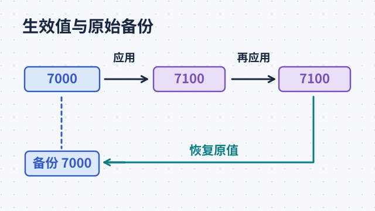

沿着状态、异步处理和交付三个环节，观察程序怎样在现实条件下可靠工作。
明确每个状态的输入和退出条件，用到达判定和网页恢复检验这些条件。
让等待、找瓶、锁定刻度和跟踪液面拥有明确的输入、转移条件和完成动作。
用位置、朝向、速度和时间窗口区分经过目标、停在目标附近，以及定位修正造成的假到达。
从刷新和双端编辑两个场景出发，决定数据存在哪里、如何识别过期响应，以及何时只恢复画面。
追踪数据在采集和写盘之间如何排队，再为长任务的完成和配置回归留下证据。
用每秒 25 帧的输入计算写盘积压，再区分采集时刻、视频播放速度和会话真正完成的时刻。
把请求受理、进程退出和文件可下载分开，用网格导出说明后台任务的状态模型。

用临时目录重现旧配置，依次验证首次生效、重复执行、失败与撤回后的结果。
从数据清单、二进制依赖到网页路径，检查产物离开原环境后能否使用。
让模型、相机、参数和坐标约定成套发布，换个目录再试一次即可发现遗留的路径依赖。
沿着头文件、链接符号和动态加载三个阶段，检查一个 C++ 库能否真正交给另一个工作空间使用。
用同一个资源名对照首页和文章页，分清相对引用、站点根路径、查询参数和页内锚点。
常用关键词